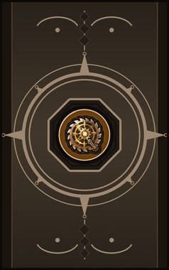
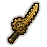
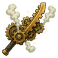
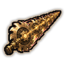
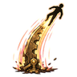
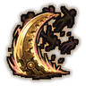

Technique trees › Universal ninjutsu
Karakuri no Yaiba (The clockwork blade)
8 techniques in the Taijutsu tab.
Unlocks through World of Naruto's own trees, a gene, a build choice or a profession.

Karakuri Shoden (Clockwork basics) D
Passive. D-rank passive. The first lessons of the clockwork blade.
Karakuri Shoden (Clockwork basics) D
Passive. D-rank passive. The first lessons of the clockwork blade.
D-rank passive. The first lessons of the clockwork blade.

Karakuri Chūden (Clockwork intermediate) B
Passive. B-rank passive. The gears answer every movement.
Karakuri Chūden (Clockwork intermediate) B
Passive. B-rank passive. The gears answer every movement.
B-rank passive. The gears answer every movement.
Karakuri Okuden (Clockwork advanced) S
Passive. S-rank passive. Mastery of the clockwork blade.
Karakuri Okuden (Clockwork advanced) S
Passive. S-rank passive. Mastery of the clockwork blade.
S-rank passive. Mastery of the clockwork blade.

Keiretsu Shingō (maximum length) C
Chakra 20. C-rank. Unfold the blade to its full length and cut through everyone in a long line. (Needs The clockwork blade in hand.)
Keiretsu Shingō (maximum length) C
Chakra 20. C-rank. Unfold the blade to its full length and cut through everyone in a long line. (Needs The clockwork blade in hand.)
C-rank. Unfold the blade to its full length and cut through everyone in a long line. (Needs The clockwork blade in hand.)
| Rank | Chakra | Cooldown | Class level |
|---|---|---|---|
| C | 20 | 15 s | 5 |
Otoshi Tsuchi (Drop hammer) B
Chakra 35. B-rank. Fold the blade into a hammer and drop it on one enemy. (Needs The clockwork blade in hand.)
Otoshi Tsuchi (Drop hammer) B
Chakra 35. B-rank. Fold the blade into a hammer and drop it on one enemy. (Needs The clockwork blade in hand.)
B-rank. Fold the blade into a hammer and drop it on one enemy. (Needs The clockwork blade in hand.)
| Rank | Chakra | Cooldown | Class level |
|---|---|---|---|
| B | 35 | 25 s | 9 |

Ichi Hi (first flight) A
Chakra 55. A-rank. The blade unfolds under your feet and launches you across the field, hitting everyone you pass. (Needs The clockwork blade in hand.)
Ichi Hi (first flight) A
Chakra 55. A-rank. The blade unfolds under your feet and launches you across the field, hitting everyone you pass. (Needs The clockwork blade in hand.)
A-rank. The blade unfolds under your feet and launches you across the field, hitting everyone you pass. (Needs The clockwork blade in hand.)
| Rank | Chakra | Cooldown | Class level |
|---|---|---|---|
| A | 55 | 1.2 hours | 13 |

Kashi Koshi (up draft) A
Chakra 55. A-rank. An upward gear slash that throws everyone in front into the air. (Needs The clockwork blade in hand.)
Kashi Koshi (up draft) A
Chakra 55. A-rank. An upward gear slash that throws everyone in front into the air. (Needs The clockwork blade in hand.)
A-rank. An upward gear slash that throws everyone in front into the air. (Needs The clockwork blade in hand.)
| Rank | Chakra | Cooldown | Class level |
|---|---|---|---|
| A | 55 | 1.2 hours | 13 |
Tokeijikake (clockworks) S
Chakra 90. S-rank. S-rank. A storm of whirling gears and blades tears through everything around you. (Needs The clockwork blade in hand.)
Tokeijikake (clockworks) S
Chakra 90. S-rank. S-rank. A storm of whirling gears and blades tears through everything around you. (Needs The clockwork blade in hand.)
S-rank. S-rank. A storm of whirling gears and blades tears through everything around you. (Needs The clockwork blade in hand.)
| Rank | Chakra | Cooldown | Class level |
|---|---|---|---|
| S | 90 | 4.8 hours | 18 |
Chakra is the technique's base cost, the number in its def. In play it is multiplied by the pawn's chakra energy usage multiplier, which traits (chakra artificer 90%, volatile conduit 110%), World of Naruto genes and jutsu enhancements change, so the technique window can show a slightly different number for each ninja. Cooldowns are in-game time, as the technique window shows them, and the pawn's cooldown stat shortens or lengthens them. World of Naruto gives every ninja a base of 100 maximum chakra; genes and traits change it.